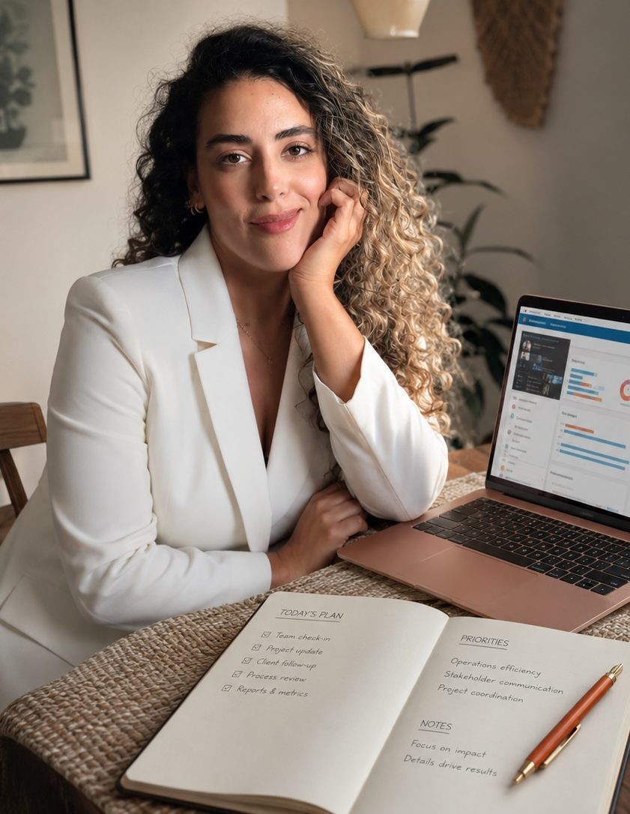
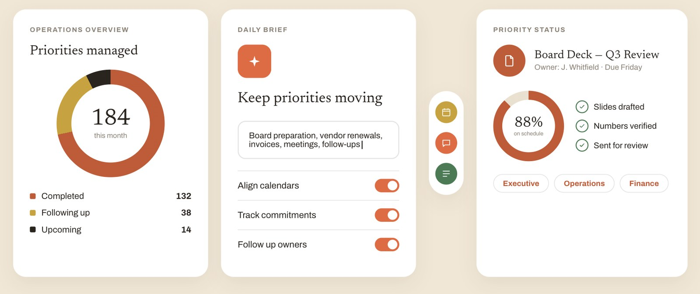
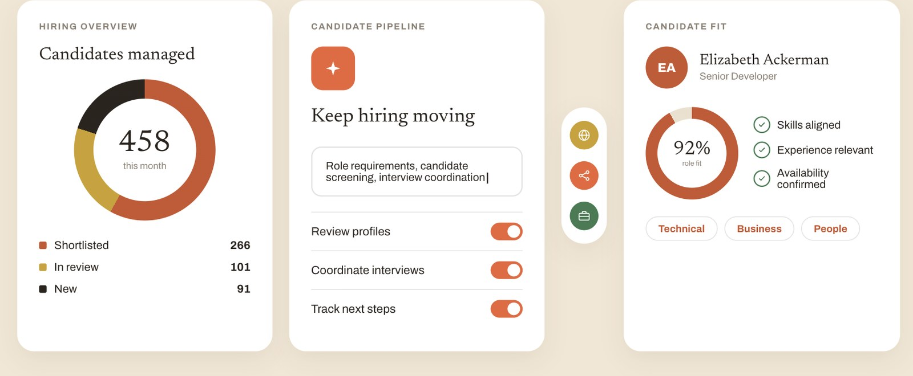
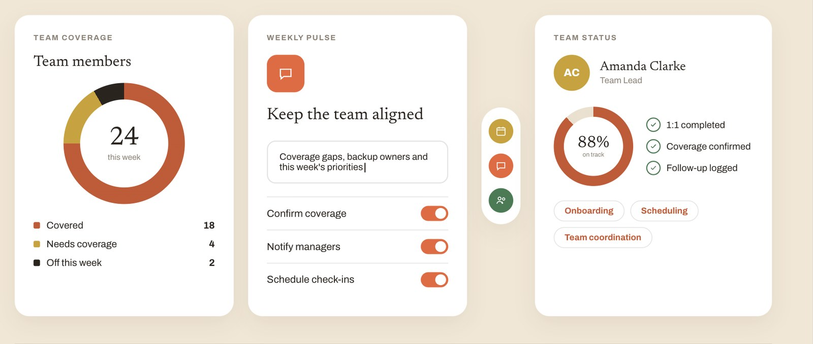
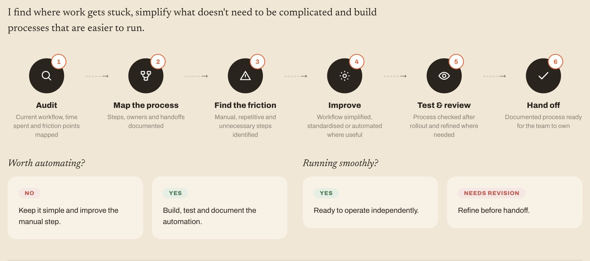

I help leaders and growing teams bring structure to the work behind the work, from executive support and business operations to hiring and people coordination.
My services are built around the kind of work I've handled firsthand: keeping priorities moving, coordinating people and suppliers, improving processes, and making sure important details don't fall through the cracks.

Structure behind the work.
For leaders and organizations that need someone to keep priorities, information, and operations moving.
Support includes

Structure behind hiring.
For organizations that need operational support throughout the hiring process.
Support includes

Structure behind people.
For organizations that need more structure in their team's day-to-day operations.
Support includes

Structure behind better workflows.
For teams losing time to manual processes and needing greater structure.
Support includes

Bring me the complexity. I'll make sense of it, take ownership and keep it moving.
Tell me what's taking your time, where things are getting stuck or what you wish someone could simply take care of. We'll start with the reality of your day, not a predefined service.
We'll look at the priorities, people and processes involved, identify where the friction is and clarify what needs to happen next.
We'll talk through the situation, what you need and where I can genuinely add value. I'll ask questions, listen carefully and be straightforward about the best place to start.
You'll receive a clear proposal outlining what I would take ownership of, how we'll work together and what's included. Once we're aligned, we set a start date and get moving.
Whether you need executive support, business operations, people coordination or recruitment support, I help bring structure to the moving pieces behind the work.
The goal isn't to add more process. It's to create clearer priorities, smoother execution and fewer things competing for your attention.
Have something that needs moving?
Tell me what's going on →© 2026 Karina Souza · All rights reserved.